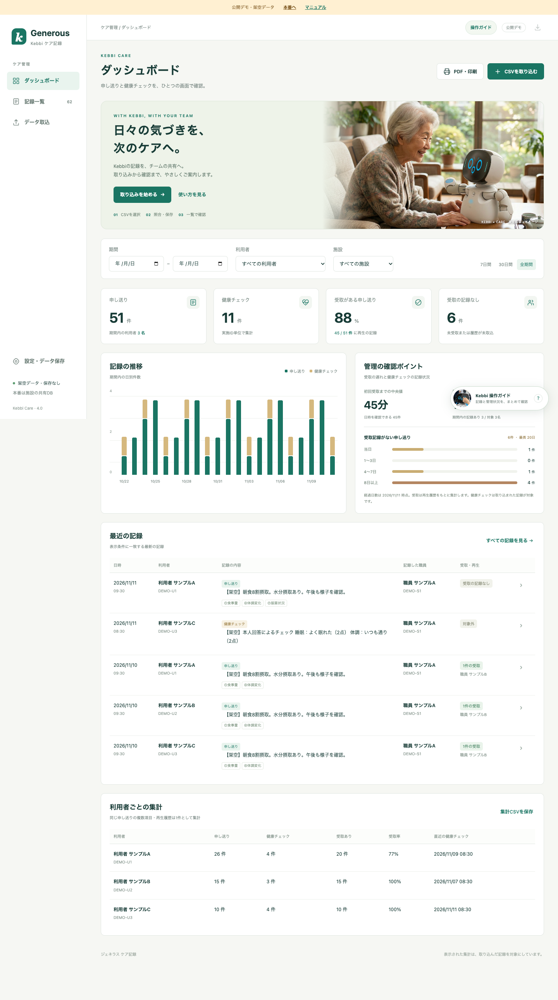
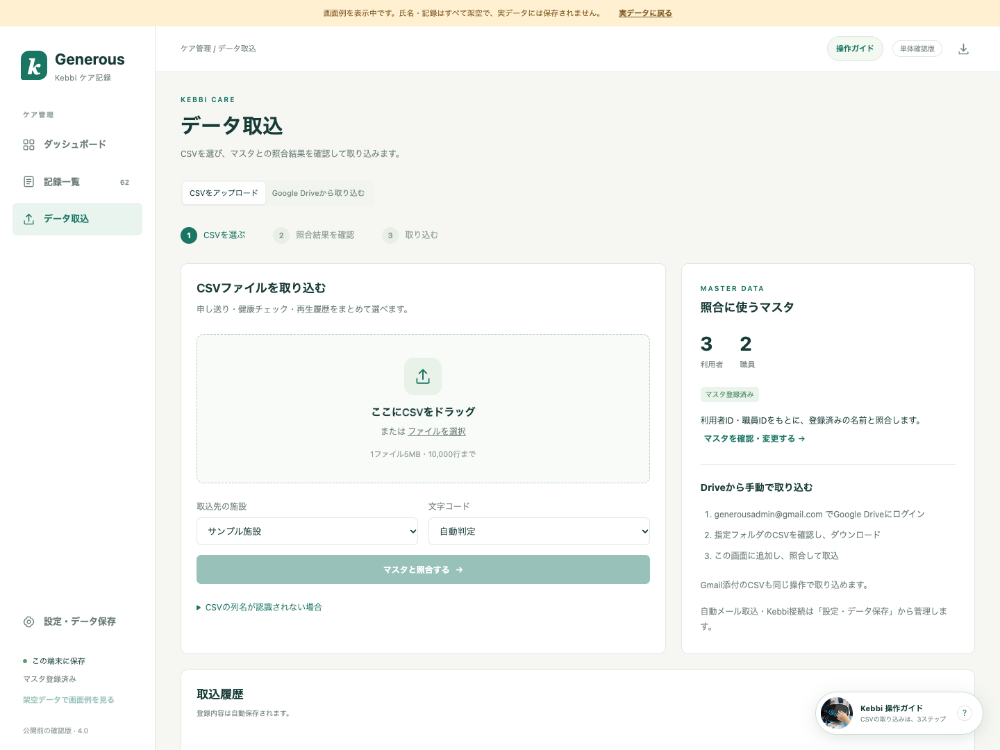
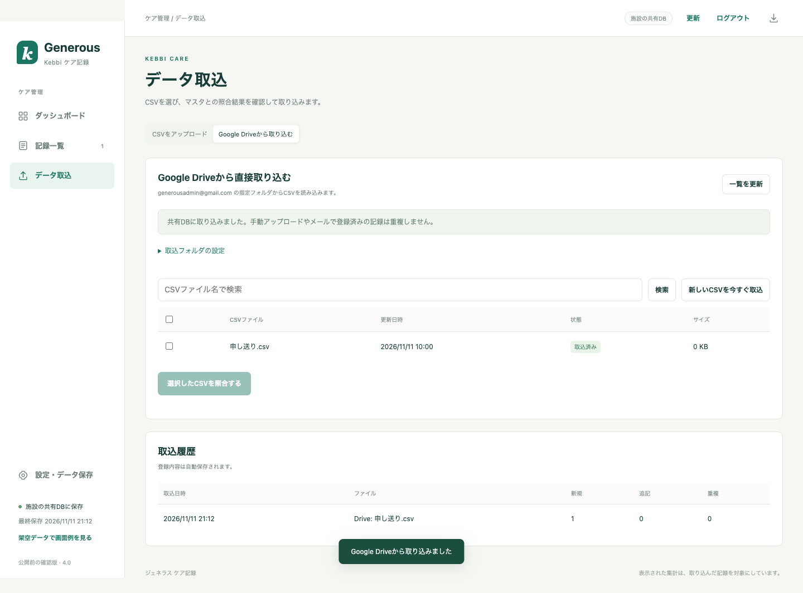
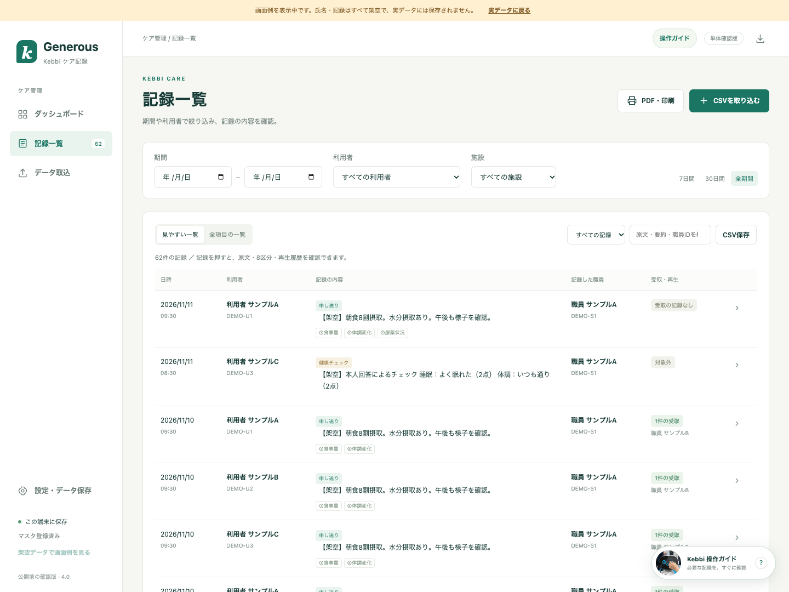
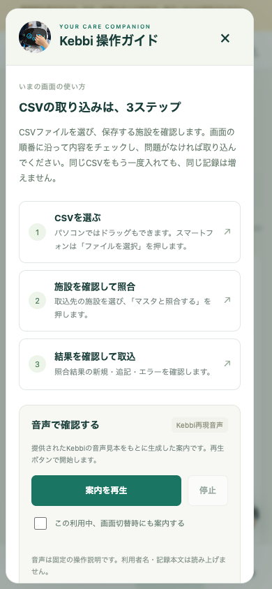

ジェネラス ケア記録 操作・確認ガイドGENEROUS / KEBBI CARE 4.0 使い方
管理アプリを開く
公開ページで画面を確認し、施設の本番アプリへ進みます。

画面例：氏名・ケア記録はすべて架空データです。- c7313y-rgb.github.io/kebbi-care/db-demo/ を開きます。
- 公開デモでは、架空データの一覧・統計・Kebbi音声を確認できます。
- 「本番へ」を押し、Googleで発行された本番URLを登録します。
- 本番画面で管理キーを入力し、CSVやDriveから記録を取り込みます。
公開デモと本番アプリ
公開デモに管理キーは不要です。実データの保存・共有・メール取込は、Google側の設置と認証後に本番アプリで利用します。管理キーはGitHubに公開しません。
GENEROUS / KEBBI CARE 4.0 本番の初期設定 1
Google側の置き場所を作る
初期設置は、受信・保存先の generousadmin@gmail.com で行います。
Googleへログイン
generousadmin@gmail.com
→script.google.com
新しいプロジェクト
- 右上のアカウントを確認し、Google Apps Scriptを開きます。
- 新しいプロジェクトを作り、名前を「ジェネラス ケア記録」にします。
- 同梱の本番設置用ファイルを開き、次の名前と種類で貼り付けます。
| 種類 | 作る名前 | 貼り付ける内容 |
|---|
| スクリプト | Code | Code.gs |
| スクリプト | MailImport | MailImport.gs |
| スクリプト | CareCore | CareCore.gs |
| スクリプト | CareServer | CareServer.gs |
| スクリプト | DriveImport | DriveImport.gs |
| HTML | Index | Index.html |
| HTML | Advanced | Advanced.html |
追加時は「＋ → スクリプト」または「＋ → HTML」を選びます。名前入力欄には拡張子を重ねて入力しません。
プロジェクト設定で「appsscript.json マニフェスト ファイルをエディタで表示する」をオンにし、同梱のappsscript.jsonの内容で置き換えて保存します。
GENEROUS / KEBBI CARE 4.0 本番の初期設定 2
権限を許可し、URLを発行する
初回の設定が済めば、利用者はURLと管理キーで開けます。
1 許可
setupMailImport_ を実行
→2 保存の準備
setupCareStorage_ を実行
→3 公開URL
ウェブアプリをデプロイ
- 左の「サービス」にGmail API v1があることを確認します。なければ「サービス＋」から追加します。
- 関数選択欄で setupMailImport_ を選び、実行します。Googleの許可画面で generousadmin@gmail.com を選び、必要な権限を許可します。
- 実行ログの管理キーを会社の保管場所に控えます。
- 続けて setupCareStorage_ を実行します。CSV原本・バックアップ用のフォルダと、毎日のバックアップを作成します。
- 「デプロイ → 新しいデプロイ → ウェブアプリ」を選びます。実行ユーザーは自分、アクセスは全員です。
- 発行された /exec で終わるURLを開き、管理キーでログインします。
- 「設定・データ保存」からジェネラスのマスタXLSXを登録します。
データは非公開です
「全員」はURLを各端末やKebbiから開くための設定です。記録の閲覧・更新にはアプリの管理キーが必要です。DB用スプレッドシートを「全員に公開」する操作は行いません。
初期設置後、通常の利用者がGoogleにログインする必要はありません。DriveでCSVを探して手動ダウンロードする場合は、保存先のGoogleアカウントでログインします。
GENEROUS / KEBBI CARE 4.0 使い方
CSVを保存してアップロードする
指定のGoogle Driveから取り出したCSVを、そのまま選べます。

「データ取込 → CSVをアップロード」の画面例です。- generousadmin@gmail.com でGoogle Driveにログインします。
- 指定フォルダでCSVを検索・確認し、右クリックの「ダウンロード」で保存します。
- アプリの「データ取込 → CSVをアップロード」を開きます。
- CSVを選択し、施設と文字コードを確認して「マスタと照合する」を押します。
- 新規・追記・登録済み・修正が必要な件数を確認し、「確認した内容を取り込む」を押します。
利用者ID・職員IDがマスタに無い場合は登録を止めます。同じCSVを再度取り込んでも、同じ記録は増えません。原文等が異なる既存記録は自動上書きしません。
GENEROUS / KEBBI CARE 4.0 使い方
Google Driveから直接取り込む
フォルダURLは、初回設置後にアプリから登録できます。

模擬Googleサービスで確認した画面例。実際のDrive接続は本番設置後に行います。- 「データ取込 → Google Driveから取り込む」を開きます。
- 指定フォルダのURLを貼り、施設・文字コードを選んで「フォルダを接続する」を押します。
- CSV一覧から対象を選び、「選択したCSVを照合する」を押します。
- 内容・件数を確認し、「確認した内容を取り込む」を押します。
自動取込も選べます
「新しいCSVを5分ごとに自動取込」をオンにすると、画面を閉じても定期確認します。「管理者ログイン時にも確認」も選べます。
対象は登録フォルダ直下のCSVです。元ファイルを移動・削除しません。手動アップロード・メール・Driveで同じ記録を送っても、共通の重複判定を行います。
GENEROUS / KEBBI CARE 4.0 使い方
一覧・グラフ・PDFを確認する
期間・利用者・施設の条件は、表示と集計・PDFに共通で適用します。

見やすい一覧と、横スクロールで確認する全項目の一覧を切り替えられます。記録を見る
- 日付と利用者を選びます。
- 「全項目の一覧」で原文・要約・職員ID・8区分・受取日時・健康結果を確認します。
- 記録を押すと詳細と複数の再生履歴を確認できます。
PDF・印刷
- 「PDF・印刷」を押します。
- 詳細／集計、A4／A3、縦／横、文字サイズを選びます。
- プレビューを更新して確認し、PDF保存または「PDFを開いて印刷」を選びます。
管理の確認ポイント：初回受取までの中央値、健康チェック実施記録率、未受取の経過日数を表示します。実施記録率は「期間内に健康チェックの記録がある利用者 ÷ 条件に一致する登録利用者」です。経過日数は本日時点です。
GENEROUS / KEBBI CARE 4.0 使い方
保存先とバックアップ
ブラウザや端末を替えても、施設の共有DBに記録が残ります。
| 保存するもの | 本番の保存先・形式 |
|---|
| 記録・マスタ・再生履歴 | generousadmin@gmail.com の非公開Googleスプレッドシート |
| CSV原本 | Drive「Kebbi Care 共有データ / CSV原本」 |
| 自動バックアップ | 同「自動バックアップ」にJSONで保存 |
- 更新前のバックアップと、毎日のバックアップを保持します。
- 期限による自動削除は行いません。
- バックアップを作れないときは、CSVの共有記録への反映を止めます。
- 「設定・データ保存」でバックアップ状態を確認できます。
手元にも保存する
「すべてのデータを保存」でJSONをダウンロードできます。画面から復元するときは、既存記録を保持し、未登録の記録と再生履歴を追加します。DB全体の復旧用バックアップには、各DB表も含めています。
確認版の保存先は、同梱フォルダのprivate/sharedです。本番Google保存とは別の検証用データです。GitHubには氏名・ケア記録・管理キーを置きません。
GENEROUS / KEBBI CARE 4.0 端末と操作ナビ
どの端末でも、迷わず操作
PC・タブレット・スマートフォンで画面が自動的に切り替わります。

スマートフォンの操作ガイド。手順を押すと操作場所を強調します。操作を確認する
- 画面上部の「操作ガイド」、またはKebbiの丸いボタンを押します。
- 今いる画面の説明と3ステップを確認します。
- 手順を押すと、操作する場所へ移動します。データは自動で変更しません。
Kebbiの声で確認する
- 操作ガイドの「音声で確認する」を開きます。
- 「案内を再生」を押します。「停止」で止められます。
- 画面切替時の案内はチェックを入れた利用中だけ有効です。
Windows・Mac・iPhone/iPad・Androidで、同じKebbi音声を再生します。初回は「案内を再生」を押します。音が出ないときは、端末の音量・音の出力先を確認してください。
| 端末 | 使い方のポイント |
|---|
| PC | WindowsはEdge/Chrome、MacはSafari/Chromeで開きます。 |
| タブレット | iPadはSafari、AndroidタブレットはChromeから本番URLを開きます。 |
| スマートフォン | iPhoneはSafari、AndroidはChrome。音声は「案内を再生」をタップします。 |
公開URLは各端末で開けます。施設の記録は「本番へ」から進み、共通管理キーで共有します。Google設置後、Windows・iPhone/iPad・Android実機で受入確認します。
GENEROUS / KEBBI CARE 4.0 受入テスト
本番利用の確認チェック
Google側の設置後、各端末と実際のCSVで操作結果を確認します。
| 確認する操作 | 期待する結果 | 確認 |
|---|
| 管理キーを間違えてログイン | 記録を閲覧できない | □ |
| CSVを取り込む | 氏名・ID・施設・日時・原文・要約が一致する | □ |
| 同じCSVをもう一度取り込む | 記録数が増えない | □ |
| 未登録の利用者・職員IDを含める | エラーが表示され、登録されない | □ |
| 英語の8区分を含むCSVを取り込む | 指定の日本語8区分に表示される | □ |
| 受取・再生履歴を取り込む | 受取職員名・ID・日付・時刻が表示される | □ |
| 健康チェックの複数設問を取り込む | 実施日と全回答が表示され、実施1件として集計 | □ |
| 期間・利用者を変更する | 一覧・集計・PDFの対象が一致する | □ |
| 別ブラウザで同じURLにログイン | 同じ記録が表示される | □ |
| ブラウザを閉じて再度開く | 保存した記録が残っている | □ |
| PDFのサイズ・向き・文字を変更 | プレビュー更新後に反映され、保存・印刷できる | □ |
| Drive直接取込と手動取込を併用 | 重複せず、原本CSVも残る | □ |
| PC・タブレット・スマホの画面 | 操作しやすい配置になり、文字ナビ・音声停止が使える | □ |
| 定期取込・バックアップ | 画面を閉じても実行され、最終日時を確認できる | □ |
本番接続後のテスト
Google Drive・Gmail・Kebbi実機の接続と定期実行は、Google側の設置・認証後に確認します。確認版では模擬Googleサービスと架空データで動作を検証しています。
不具合をご連絡いただくときは、操作した画面、操作手順、期待した結果、実際の表示をお知らせください。実CSVの列名も照合して最終確認します。